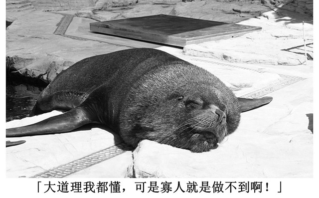
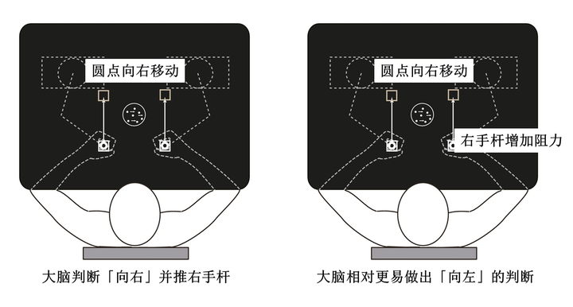
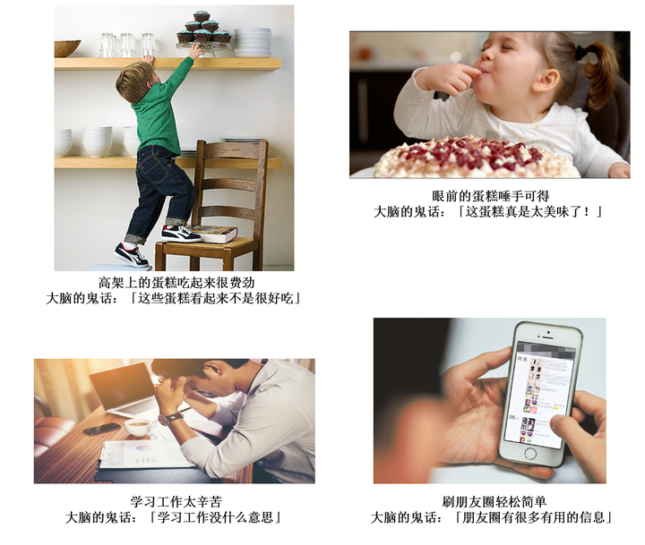
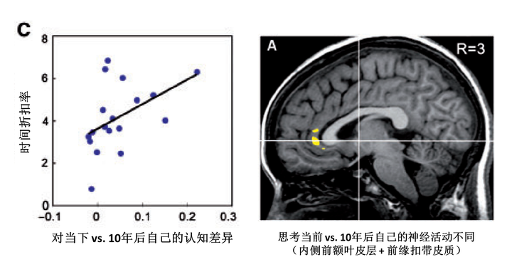
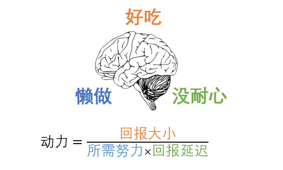

大家工作学习中都有犯拖延症的经历。如： 「今天太累了，我明天再复习吧」
「写论文前我先查个邮件吧」 「读书要有干净整洁的环境。我打扫下房间先。。。」 「大道理我都懂，可是寡人就是做不到啊！」
拖延症是指明知拖延有害，仍不理智的拖延重要事情的一种行为习惯 [1]。
当今社会按部就班的工作越来越少（比如按小时体力工作），依赖自我约束来合理安排时间排序任务的工作越来越多（如做科研，做设计，做咨询等等）。另一方面，由于互联网和移动技术的发展，我们面临的各种诱惑越来越多。我们学习工作中不知不觉会随手拿起手机刷朋友圈，知乎等（说的就是你！），从而加重了拖延症的蔓延。
拖延症其实不能算病。拖延是大脑的天性在现代社会的真实流露。在人类进化的过程中，基因为了遗传复制，自然选择出了**「好吃懒做没耐心」**的大脑 [2]。个体在大脑的指引下，想方设法以最少的投入（懒做），用最短的时间（没耐心），获得最大的回报（好吃）。这种「自私」的行为方式确保了个体所带基因在整个基因库的竞争地位。在现代社会中，自然生存的压力减小了，大脑进化出来的「小聪明」反倒成了它的劣根性。
「懒做」身不由己
为了保证个体的竞争力，大脑天生喜爱节约能量以防不测。越是费劲的事情，大脑越是不喜欢做。约有近一半的大学生把拖延归咎于「不喜欢写作业」[3]。人们在圣诞节拖拖拉拉到商场关门前才去购买礼物的主要原因是「不喜欢逛商场」[4]。然而写作业和逛商场并不是多么令人厌恶的事情。**大脑只是觉得做这些事太费劲，然后才编出「不喜欢」这种鬼话。**不幸的是这个真相大脑是不会告诉你的。
今年2月份在eLife上发表的一篇文章揭开了这个残酷的事实。他们发现大脑对视觉信息的感知会受运动系统费力程度的影响 [5]。研究人员在电脑屏幕上显示一组向左或向右移动的圆点。被试者需要相应的推动左手或者右手的杆来做出回答。随着实验的进行，调皮的研究人员偷偷的给其中的一个杆（比如右手的杆）增加了阻力，使之推起来越来越困难。被试所见的视觉信息并没有变化。然而由于左手的杆推起来比较容易，被试们不知不觉的倾向于做「向左移动」的判断。令人担忧的是，被试人竟浑然不知自己判断上的偏差。运动系统适应新环境后在潜意识里就神不知鬼不觉的影响了大脑的决定。

这个实验说明了大脑对事物价值的判断很不准确，在潜意识里就已经被周围环境和费力程度所影响了。这也就是为什么同样的蛋糕放在眼前就比放在高架上看起来更好吃，为什么我们刷起朋友圈毫无压力，工作学习起来却「身不由己」的拖延了。

未来的我不是我
大脑不光懒做，还很没有耐心。经济学里有个概念叫「时间折扣」（temporal discounting），说的是回报和惩罚在时间上越是遥远，对当前决定的影响越小。假如你今天微信抢了100元的红包，若是一年后取的话，可以取120元。虽然一年20%的收益相当可观，但是很多人等不了一年会选择马上取100元。也就是说大脑对120元回报的期望是打了折扣的，是要小于当下的100元的。如果把这个回报延迟缩短到一天的话，几乎所有的人都愿意等一下的。
大脑在做决定的时候会比较各种任务的回报。「我是应该学习，还是刷朋友圈？」努力学习成绩好对找工作有利，可以有光明的前途，可是离毕业还有好多年呢！回报遥遥无期，对学习的积极性就大打折扣。相比之下，刷朋友圈我马上就会很开心，比学习什么的回报高多啦！这么一来，缺乏耐心的大脑就选择了刷朋友圈而拖延了学习。
对灵长类的实验证明，从事当前任务的积极性确实受回报期望值的影响 [6]。对回报的期望越强烈，猴子们的出错率越低。对灵长类和人类的实验都证明回报期望值的变化是和前缘扣带皮质（anterior cingulate cortex）神经元的活动相关 [6,7]。
为什么对回报的期望值会受时间的折扣呢？未来本体连续性（future self-continuity）的假说认为大脑倾向于把当下的自己和未来的自己区别对待，仿佛未来的自己是于己无关的第三人。事不关己，高高挂起。既然未来的「我」不是我，那TA要是有什么三长两短也与我没有干系。09年的一组研究证实人们对当下和10年后自己的认知确实是有差异的 [8]。关键的是，这种差异和被试的时间折扣率呈正相关（下图左）。也就是说越是将当下和未来的自己区别对待的人，对回报价值的期望越受时间折扣的影响。有意思的是，被试人在思考当前和未来的自己时也在前缘扣带皮质表现出神经活动的差异（下图右）。这说明时间折扣现象和当前-未来认知差异具有相似的神经基础。

两大原则优化行动力
经过上面的分析我们可以将大脑的「好吃懒做没耐心」转化成下面这个行动力公式：

我这里参考了Steel的时间动机模型 [1]。为了能帮助大家操作，我特地除去了性格个体差异等较难改变的因素，只关注人为可以有效干预的因素。在这个模型里，行动力是和回报大小呈正相关，与所需努力和回报延迟呈负相关。我这里抛砖引玉，提炼出两大原则来指导我们优化行动力。只要能遵循原则，具体的方法大家可以根据个人的情况来摸索和尝试。
1. 画大饼小口吃
我们可以通过提高回报的大小来提高行动力。也就是把「饼」画得大一点，把你的全局目标简单粗暴的定高一点。如果你今年的目标是读12本书，那我们就提高到24本。对一些人来说，饼画的大，有挑战性自然就比较有吸引力，向目标前进的时候也更有激情和动力。
另外一些人就不乐意了，说：「饼辣么大，吃起来不是更费劲？像我这种意志不坚定的，岂不是更要打退堂鼓了？」
可不是么！为了解决这个矛盾，我们可以通过小口的吃饼来迷惑大脑，在局部上减小所需努力和回报延迟这两个分母。假设你决定要读24本书了，一本书10万字，那一共就是240万字。看起来很吓人感觉要打退堂鼓是不是？可是这个数字一年平均下来也不过6600字每天。保守的200字/分钟的读速可以在33分钟内完成。所以为了吃24本书这块大饼，你只要每日说服大脑早上起来或者睡觉前读半小时就好了。虽然所需努力和回报延迟的总量不变，但是日均下来对大脑当日决定的负面影响就大大减少了，从而在局部提高了相对行动力。通过反复的「小口吃饼」，大脑还能逐渐养成习惯，减少做决定的次数，从而避开这些负面因素的影响。
当然方法是活的。比如我们还可以把工作和诱惑结合起来（不想做PPT想见朋友，那约起朋友一起做PPT！）来提高回报大小。或者通过生动的想象未来的回报（比如毕业后的兴奋激动）或惩罚（不能毕业的痛苦）来减少时间折扣的影响。具体的方法这里就留给大家自行创新和尝试。
2. 塑造省心环境
然而要告别拖延光从自己出发是不够的。我们还需要注意塑造省心的环境让大脑「身不由己」的做它应该做的事情。我们在前面的实验中看到，对视觉信息的决定可以在潜意识里被外界环境中推杆的阻力所影响，而自己浑然不知。为了提高行动力，我们可以把工作的环境设计的尽量省心省力。比如你要完成每日阅读30分钟的目标，那你可以把要读的书放在顺手能及的地方，比如放床头或早餐桌。这样你每天睡觉前起床后都很自然的会看到你的书，不费吹灰之力就能顺手拿起来阅读。在这种环境下，其他的事情如做早饭洗澡显得相对费力，读书成了当下最有吸引力的事情。
我们既然可以塑造省心的环境，当然也可以人为的给诱惑设置环境障碍，以懒制懒来四两拨千斤。假如你有顺手拿起手机刷朋友圈的习惯。你可以尝试把手机放在「眼睛看不见，拿出来又很麻烦」的地方（比如锁在抽屉里，然后把钥匙放在厕所里）。大脑可懒了，刷个朋友圈还要去趟厕所开抽屉这简直是要累死宝宝呀！用不了多久，大脑就懒的去刷朋友圈了。
大家明白了环境的重要性之后，具体怎么塑造环境就留给大家自行思考创新。环境可以是物理的，情感的，社会的等等。大家请脑洞大开，多多尝试，别忘了留言分享哦！:-)
结语
百万年的自然选择进化出了好吃懒做没耐心的大脑。拖延症不是病，它只不过是大脑在现代社会的本性流露。我们不必为自己的拖延捶胸顿足懊悔不已。请放轻松。通过学习理解大脑，我们可以巧妙的利用大脑的天性来为我们所用。虽然本文篇幅有限，不能囊括所有的相关研究，但我希望本文能够激发您对脑科学的兴趣。21世纪是脑科学的世纪（容我忽悠一下嘿嘿），不论您来自哪行哪业，学习脑科学一定能帮您更好的认识自己，从而事半功倍，把握人生！
参考文献
- Steel, P. (2007). The nature of procrastination: a meta-analytic and theoretical review of quintessential self-regulatory failure. Psychological Bulletin, 133(1), 65-94.
- Dawkins, R. (2016). The selfish gene. Oxford university press.
- Kachgal, M. M., Hansen, L. S., & Nutter, K. J. (2001). Academic procrastination prevention/intervention: Strategies and recommendations. Journal of Developmental Education, 25, 14-24.
- Ferrari, J. R. (1993). Christmas and procrastination: Explaining lack of diligence at a “real-world” task deadline. Personality and Individual Differences, 14, 25-33.
- Hagura, N., Haggard, P., & Diedrichsen, J. (2017). Perceptual decisions are biased by the cost to act. eLife, 6, e18422.
- Shidara, M., & Richmond, B. J. (2002). Anterior cingulate: single neuronal signals related to degree of reward expectancy. Science, 296(5573), 1709-1711.
- Kennerley, S. W., Behrens, T. E., & Wallis, J. D. (2011). Double dissociation of value computations in orbitofrontal and anterior cingulate neurons. Nature Neuroscience, 14(12), 1581-1589.
- Ersner-Hershfield, H., Wimmer, G. E., & Knutson, B. (2009). Saving for the future self: Neural measures of future self-continuity predict temporal discounting. Social Cognitive and Affective Neuroscience, 4(1), 85-92.
谢谢您的阅读！
祝大家告别拖延，天天开心！